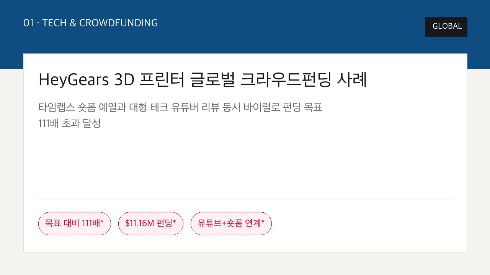
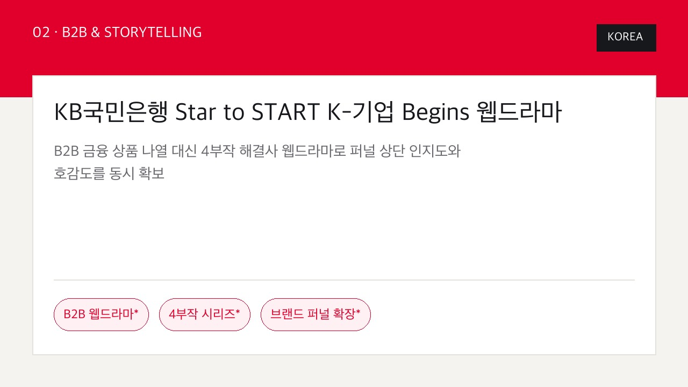
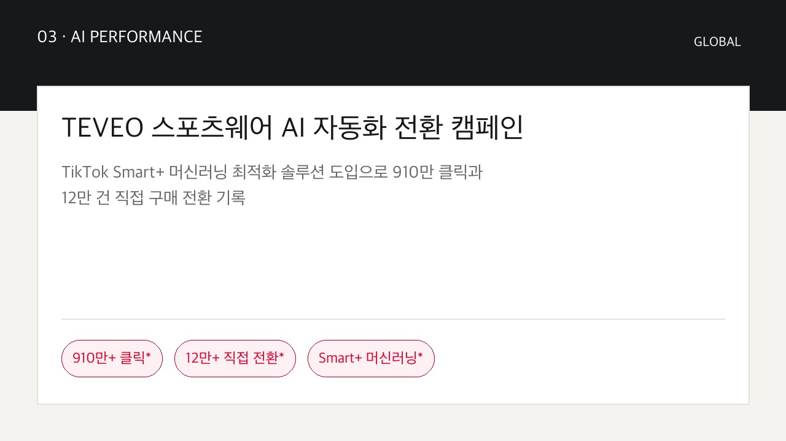
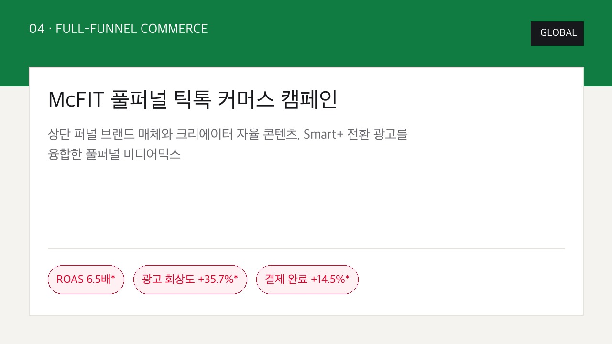
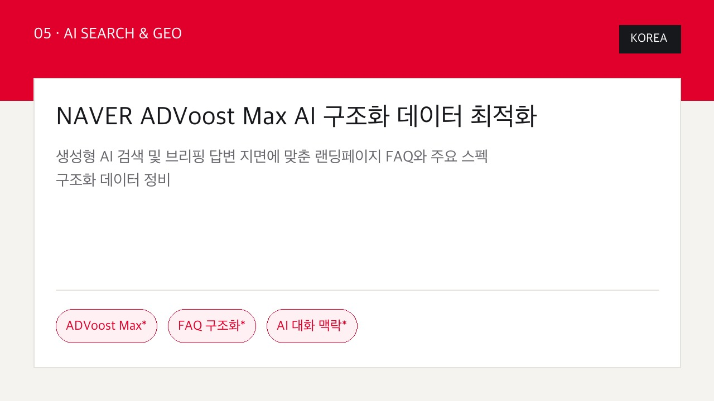
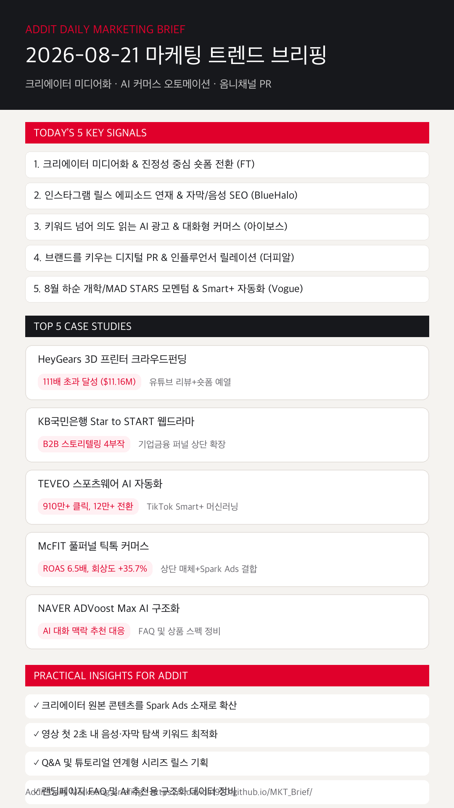

01
마이크로 크리에이터의 진정성 숏폼이 발견·구매 퍼널을 직접 견인한다
스튜디오 연출형 광고보다 크리에이터의 현장감 있는 작동/사용 숏폼 및 리뷰가 유저 검색과 전환율을 만듭니다. (FT)
진정성 중심 숏폼 예열, B2B 스토리텔링 웹드라마, TikTok Smart+ 머신러닝, 릴스 에피소드 SEO 및 AI 구조화 데이터 전환 전략을 한눈에 읽습니다.
스튜디오 연출형 광고보다 크리에이터의 현장감 있는 작동/사용 숏폼 및 리뷰가 유저 검색과 전환율을 만듭니다. (FT)
단발 바이럴 대신 Q&A 및 튜토리얼 시리즈 기획과 영상 내 첫 2초 탐색 키워드 배치가 검색 노출을 결정합니다. (BlueHalo & New Engen)
생성형 AI 대화 문맥에 맞춰 실시간 상품 혜택과 스펙을 추천하는 대화형 맥락 커머스가 확산됩니다. (디지털 인사이트 & 아이보스)
단순 협업을 넘어 브랜드 보도자료, 미디어 연재, 팬덤 커뮤니티를 결합해 브랜드 신뢰도를 다각도로 높입니다. (더피알 & DMC Report)
8월 23일 처서, 8월 26~28일 MAD STARS 및 추석 준비 시즌에 맞춰 TikTok Smart+ 및 AI 마이크로사이트로 최적화합니다. (Vogue & ZDNET)

GLOBAL작동 과정 타임랩스 숏폼을 사전 확산하고 펀딩 당일 테크 유튜버 리뷰를 동시 공개해 1,116만 달러($11.16M) 펀딩을 달성했습니다.

KOREA소상공인·중소기업 성장을 돕는 웹드라마 4부작으로 기업금융 퍼널 상단 인지도 확보 및 브랜드 호감도를 극대화했습니다.

GLOBAL타깃팅과 입찰을 자동화하는 Smart+를 적용하고 착용샷 숏폼을 대량 투입하여 910만 클릭, 12만 건의 직접 전환을 기록했습니다.

GLOBAL브랜드 인지도 상단 매체와 현장감 있는 크리에이터 콘텐츠, Smart+ 퍼포먼스를 결합해 회상도 +35.7%, ROAS 6.5배를 완성했습니다.

KOREA네이버 ADVoost Max와 AI 브리핑 지면에 맞춰 웹사이트 FAQ 및 스펙 구조화 데이터를 정비하여 탐색 전환율을 상승시켰습니다.
브랜드의 직접 광고보다 크리에이터 원본 콘텐츠에 Spark Ads를 적용할 때 신뢰도와 클릭률(CTR)이 월등히 높아집니다.
TikTok Spark Ads 근거 보기 →해시태그 중심에서 벗어나 숏폼 영상 첫 2초 내 음성 발화 및 상단 자막에 유저의 구체적인 탐색 키워드를 배치합니다.
New Engen Trend 근거 보기 →단발성 바이럴 숏폼 대신 `고객 자주 묻는 질문 3가지`, `실패 없는 선택법` 등 연계형 에피소드 릴스로 체류시간을 높입니다.
BlueHalo Social Report 근거 보기 →AI 답변 및 ADVoost Max 생태계 노출을 위해 웹사이트 FAQ, 상품 스펙, 혜택 등 구조화 데이터 체크리스트를 정비합니다.
네이버 ADVoost Max 근거 보기 →8월 23일 처서, 8월 26~28일 MAD STARS 일정에 맞춰 D-7 기획, D-3 세팅, D+1 회고 루틴을 애드아이티 표준 운영안으로 정례화합니다.
나스미디어 캘린더 근거 보기 →GEO/LLMO 시대 SEO의 진화와 의도 읽는 AI 광고 맥락 커머스 트렌드를 검토합니다.
디지털 인사이트 바로가기 →브랜드를 키우는 디지털 PR 전략과 소셜미디어 시장 동향 수치 리포트를 분석합니다.
더피알 바로가기 →
마케팅 성과는 단순 스튜디오 광고의 물량 투입에서 크리에이터 진정성 숏폼 예열, B2B 웹드라마 스토리텔링, Smart+ AI 전환 오토메이션의 체계적 결합으로 이동하고 있습니다.
{kind=link}